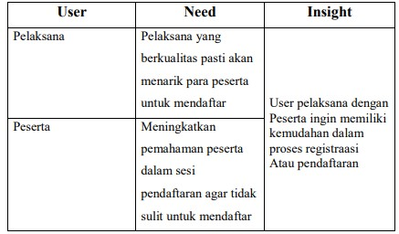

1. USER RESEARCH
➢ Pelaksana iven atau lomba-lomba
• Nama anda..?2 jawaban
• Erik Gwijangge
• Arifander Tenouye
• Umur Anda...?2 jawaban
• 22
• 20
• Iven Atau lomba apa saja yang anda perna
terlibata menyukseskan...?
• Paduan suara
• Game Online Free Fire
• apa pesan positif dan negative anda dalam
melaksanakan atau menyukseskan iven atau
lomba di atas?
• Menjadi satu pengalaman yang luarbiasa
• Tetap Maju
• Bagaimana proses Registrasi atau pendaftaran
peserta saat mengikuti iven yang anda lakukan..?
jika registrasi atau pendaftaran secara manual
atau digital software/aplikasi apa yang di gunakan
mendata setiap peserta..?
• Manual
• Online, dengan biaya pendaftaran 150 per team
• Dari persoalan-persoalan di atas apa harapanya
kedepan..?
• Menjadi lebih baik lagi
• Sesuaikan, karena skrang saya sdh batasi bermain Game
•
➢ Peserta iven atau lombah
• Nama Anda ?
• Sintya nirigi
• Samuel Bosawer
• Grace Yeimo
• Yance kudiai
• Jennie
• Klarita
• Umur anda ?6 jawaban
• 17
• 24
• 20 tahun
• 20
• 23
• 21
• Iven atau lomba apa saja yang perna anda ikut ?6
jawaban
• Lomba model
• Lomba Video, Iven kegiatan UMKM
• Komikom Uncen tahun 2019, Mata pelajaran matematika
• Liga 3
• Futsal
• Loba fotografi
• Dari awal mengikuti iven atau lomba kendala apa
saja yang di alami dalam?
• Kendalanya adalah kekurangan dana
• Melakukan pembayaran yg masih manual
• Ujian masih tertulis dan penjagaan tidak begitu ketat sehingga
banyak kecurangan yang terjadi
• Kurang enak badan
• Kurang istirahat
• 1.Waktu 2.Kurang updet lokasi / tempat wisata yg baru 3.masih
merasah kurang dalam proses pengambilan gambar
• Dalam berlangsungnya iven atau lomba apa saja
kendalah yang menghambat anda ?
6 jawaban
• Saat berispiking
• Tidak ada, karena kami difasilitasi mulai dari kendaraan, alat
tulis sampai makanan
• Sakit
• Cepat capeh
• Kurang updet lokasi
• Dari persoalan di atas apakah harapan yang ingin
dicapai ke depannya?
• Saya ingin kedepannya saya bisa maju dan bangkit
• Harap di setiap stand/jualan menyediakan sistem pembayaran
online
• Harapannya sistem ujian bisa diubah agar tidak terjadi banyak
kecurangan
• Juara
• Lebih melatih diri dengan kebiasaan berolahraga yg teratur.
• Harapan sy mungkin lebih bisah teliti lgi dlm pengambilan data
Di Bawah ini adalah Desain Challenge dari User Research Kami
